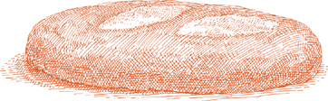

OСВ ИЗ IТАЛИЯ две ценные породы крупного рогатого скота для мяса —Кьянина говядина — родом из Тосканы. Его единственным конкурентом в стране является Пьемонт. Разза Пьемонтезе. Последний из двух нежнее и сладкий, как сливки, тогда как тосканский более твердый и вкусный. Кьянина быстро вырастает до больших размеров, поэтому его забивают, когда бычок становится взрослым теленком, вителлон на итальянском языке. Для итальянцев, любящих говядину, лучшим стейком является Ти-бон, приготовленный на гриле во флорентийском стиле. Отчасти своей привлекательностью он обязан, конечно же, характерному вкусу мяса, но не меньшее значение можно приписать и флорентийскому способу его приготовления, который можно с успехом применить к прекрасному, выдержанному стейку где угодно.
На 2 порции
Угольный или дровяной гриль
Черный перец горошком, очень крупно помолотый или истолченный пестиком в ступке.
1 стейк из говядины на косточке толщиной 1,5 дюйма, доведенный до комнатной температуры
Крупная морская соль
НЕОБЯЗАТЕЛЬНЫЙ: слегка раздавленный и очищенный зубчик чеснока.
Оливковое масло экстра вирджин
1. Разжигайте уголь вовремя, чтобы он образовал белую золу перед приготовлением, или заблаговременно разжигайте дрова, чтобы они превратились в горячие угли.
2. Натрите мясо крупномолотым или измельченным перцем горошком с обеих сторон.
3. Жарьте стейк до желаемой степени, желательно очень редко, примерно 5 минут с одной стороны и 3 с другой. Перевернув, посыпьте солью жареную сторону. Когда другая сторона будет готова, переверните ее и посыпьте солью.
4. Когда стейк будет готов по вашему вкусу и еще находится на гриле, натрите кость дополнительным зубчиком чеснока с обеих сторон, затем слегка сбрызните мясо с обеих сторон несколькими каплями оливкового масла. Переложите на теплое блюдо и сразу подавайте.
Примечание  Я видел, как повара натирали стейк маслом. до кладу его на гриль, но подгоревшее масло придает мясу привкус жира, которого я предпочитаю избегать.
Я видел, как повара натирали стейк маслом. до кладу его на гриль, но подгоревшее масло придает мясу привкус жира, которого я предпочитаю избегать.
На 4 порции
Оливковое масло экстра вирджин
4 стейка из вырезки или эквивалентного куска без костей толщиной ¾ дюйма, доведенного до комнатной температуры перед приготовлением
Соль
Черный перец, свежемолотый с мельницы
½ стакана сухого вина Марсала
½ стакана сухого красного вина
1½ чайной ложки чеснока, мелко нарезанного
1 чайная ложка семян фенхеля
1 столовая ложка томатной пасты, разбавленная 2 столовыми ложками воды
Нарезанный острый красный перец чили по вкусу
2 столовые ложки измельченной петрушки
1. Выберите сковороду, на которой впоследствии можно будет разместить все стейки в один слой. Налейте ровно столько оливкового масла, наклонив сковороду в нескольких направлениях, чтобы оно хорошо покрыло дно. Включите сильный огонь и, когда масло станет настолько горячим, что над ним образуется легкая дымка, положите туда стейки. Готовьте их по вкусу, желательно нежарко, примерно 3 минуты с одной стороны и 2 с другой. Когда все будет готово, выключите огонь, переложите стейки на теплое блюдо, посыпьте солью и небольшим количеством перца.
2. Включите средний огонь под сковородой и добавьте марсалу и красное вино. Дайте вину пузыриться примерно полминуты, одновременно очищая кастрюлю деревянной ложкой, чтобы удалить остатки кулинарной обработки, прилипшие ко дну и бокам.
3. Добавьте чеснок, готовьте достаточно долго, чтобы перемешать 2 или 3 раза, добавьте семена фенхеля, перемешивайте несколько секунд, затем добавьте разведенную томатную пасту и нарезанный перец чили по вкусу. Уменьшите огонь до среднего и готовьте, часто помешивая, около минуты, пока не образуется густой сиропообразный соус.
4. Верните стейки на сковороду не дольше, чем потребуется, чтобы 2–3 раза обмакнуть их в соусе. Переложите стейки с соусом на теплое сервировочное блюдо, посыпьте сверху рубленой петрушкой и сразу подавайте.
TОН СТЕЙКИ Для этого блюда используются очень тонкие ломтики говядины, которые делаются еще тоньше за счет оттирания, чтобы сократить время приготовления до минимума. Большинство мясников растолкут их за вас, но если вам нужно расплющить их самостоятельно, следуйте инструкциям. описан метод в разделе телятина скалоппин. После отбивания надрезайте края ломтиков, чтобы они не скручивались на сковороде.
На 4 порции
½ средней луковицы, нарезанной очень тонко
2 столовые ложки оливкового масла
2 средних зубчика чеснока, очищенных и нарезанных очень тонкими ломтиками
⅔ чашки свежих, спелых помидоров, очищенных и нарезанных, ИЛИ консервированные импортные итальянские помидоры сливы, крупно нарезанные, с их соком
Орегано: ½ чайной ложки, если свежий, ¼ чайной ложки, если сушеный.
Соль
Черный перец, свежемолотый с мельницы
1 дюжина черных круглых греческих оливок без косточек и на четвертинки
Растительное масло
1 фунт стейков из говядины без костей, желательно из курицы, нарезанных толщиной менее ½ дюйма, расплющенных, как описано выше, и доведенных до комнатной температуры перед приготовлением.
1. Положите нарезанный лук и оливковое масло в сотейник, включите средний огонь и готовьте лук, давая ему постепенно увядать. Когда он станет бледно-золотистого цвета, добавьте чеснок. Готовьте чеснок, пока он не станет очень светлого цвета, затем добавьте помидоры с соком и орегано. Тщательно перемешайте, чтобы оно хорошо покрылось слоем, отрегулируйте огонь так, чтобы помидоры варились при постоянном кипении, и готовьте около 15 минут, пока масло не выплывет из помидоров. Добавьте соль, немного молотого перца и оливки, тщательно перемешайте и готовьте еще 1 минуту. Убавьте огонь до минимума.
2. Нагрейте тяжелую сковороду, желательно чугунную, пока она не станет горячей, затем быстро смажьте дно тканевым полотенцем, смоченным растительным маслом. Положите ломтики говядины и готовьте с обеих сторон всего несколько секунд, необходимых для их подрумянивания. Посыпьте солью и перцем при переворачивании.
3. Переложите мясо в кастрюлю с томатным соусом и переверните 2–3 раза. Выложите стейки на теплое сервировочное блюдо, полейте их соусом и сразу же подавайте.
Предварительное примечание Рецепт можно завершить за несколько часов или даже за день до этого момента. Не добавляйте оливки, добавляйте их только после разогрева соуса, прежде чем он смешается со стейками.
На 4 порции
3 столовые ложки оливкового масла первого отжима
½ стакана лука, нарезанного очень тонко
4 говяжьих стейка, обжаренных на сковороде, нарезанных толщиной менее ½ дюйма от окорока или круглого куска
1 стакан муки, выкладываем на тарелку
Соль
Черный перец, свежемолотый с мельницы
Небольшой пакет ИЛИ 1 унция сушеного белые грибы грибы восстановленные как описано и нарезаем крупными кусочками
Фильтрованная вода от грибной замачивания, см. инструкции
½ стакана сухого красного вина
½ стакана консервированных импортных итальянских помидоров сливы, нарезанных, с соком
1. Выберите сотейник, в который впоследствии можно будет поместить все стейки без перекрытия. Добавьте оливковое масло и нарезанный лук и включите средний огонь.
2. Готовьте, пока лук не станет полупрозрачным, затем обваляйте стейки с обеих сторон в муке и выложите на сковороду, увеличив огонь до максимума. Обжарьте мясо примерно по 1 минуте с каждой стороны, посыпьте его солью и несколькими щепотками перца и переложите шумовкой на теплую тарелку.
3. Добавьте в кастрюлю нарезанные восстановленные грибы и отфильтрованную воду, полученную после замачивания, убавьте огонь до среднего и варите, пока грибная жидкость полностью не выпарится. Время от времени помешивайте.
4. Добавьте вино и дайте ему покипеть минуту или около того, часто помешивая, затем добавьте помидоры с соком и отрегулируйте огонь так, чтобы они варились медленно, но устойчиво. Добавьте соль и перец, поправив приправу по вкусу, и время от времени помешивать. Готовьте около 10–15 минут, пока масло не вытечет из помидоров.
5. Увеличьте огонь до сильного, верните стейки на сковороду вместе с соком, который они могли пролить на тарелку, и переверните их один или два раза, чтобы разогреть их в соусе, но не дольше 20–30 секунд. Переложите мясо и все содержимое формы на теплое блюдо и сразу подавайте.
VОЧЕНЬ ТОНКИЙ Здесь соединены одинаковые ломтики говядины, а между ними начинка из сыра и ветчины. Их скрепляет оболочка из муки, яиц и панировочных сухарей, которая застывает во время приготовления и соединяет края. Сыр в начинке также вносит свою лепту, плавясь и прилипая к мясу.
На 4 порции
1 фунт бретелька стейки, нарезанные как можно тоньше (см. примечание ниже)
Соль
Черный перец, свежемолотый с мельницы
4 очень тонких ломтика фонтина сыр
4 тонких ломтика прошутто ИЛИ ветчина вареная некопченая
1 яйцо
Целый мускатный орех
Растительное масло
1 стакан муки, выкладываем на тарелку
Мелкие, сухие, неароматизированные панировочные сухари, разложенные на тарелке.
Примечание Брасиоле стейки получаются из центрального куска верхнего или нижнего раунда. Если взять самую широкую часть круга, ломтики будут очень длинными, примерно от 10 до 12 дюймов. В этом случае вам понадобится всего 4 ломтика, которые вы потом разрежете пополам. Если ломтики взяты из более узкой концевой части, вам понадобится 8 штук, которые вы оставите целыми. Если они толще ¼ дюйма, попросите мясника их немного расплющить или сделайте это самостоятельно. как описано.
1. Соедините бретелька кусочки, наиболее близкие по размеру и форме. Поместите один над другим и при необходимости подровняйте края так, чтобы срез сверху совпадал с срезом снизу как можно точнее, без больших зазоров и наложений.
2. Между каждой парой бретелька посолить и поперчить, положить кусочек фонтина и один прошутто. Центрировать фонтина так, чтобы он не подходил слишком близко к краям мяса. При необходимости загните прошутто так, чтобы оно не выступало за край. бретелька. Выровняйте верхнюю часть и нижнюю половину каждой пары мясных ломтиков так, чтобы они как можно ближе совпадали.
3. Разбейте яйцо в небольшую миску и слегка взбейте его вилкой, добавив крошечную терку мускатного ореха (около ⅛ чайной ложки) и щепотку соли.
4. Выберите сковороду, на которую впоследствии можно будет положить бретелька не перекрывая друг друга, добавьте достаточно масла, чтобы оно поднялось на ¼ дюйма по бокам, и включите сильный огонь.
5. Переверните каждую пару бретелька в муке, обращаясь с ними осторожно, чтобы они не развалились. Убедитесь, что края запечатаны мукой, затем обмакните их во взбитое яйцо и обваляйте в панировочных сухарях.
6. Как только масло станет достаточно горячим, снимите бретелька в кастрюлю. Масло готово, когда оно зашипит, если окунуть в него один конец Брасиола в это. Хорошо подрумяньте их с одной стороны, осторожно переверните и обработайте другую сторону. Когда обе стороны полностью подрумянятся, поместите их ненадолго на решетку для охлаждения, чтобы они стекали, или на тарелку, застеленную бумажными полотенцами, затем переложите на теплое блюдо и сразу подавайте.
Предварительное примечание Брасиола может будьте готовы к этому моменту за несколько часов до того дня, когда вы планируете их готовить.
TЗДЕСЬ множество версий Фарсумауро в Южной Италии и на Сицилии они различаются в зависимости от сорта колбас, сыров и трав, которые повар может положить в начинку. Приведенный ниже рецепт более сдержан, чем большинство других, которые я пробовал, отчасти из-за необходимости (за пределами Сицилии нет удовлетворительных заменителей местных сыров и продуктов из свинины), а отчасти по собственному выбору: мне кажется, что даже в этой упрощенной интерпретации он достаточно насыщенный и пикантный.
Большой кусок мяса, служащий оберткой для начинки, можно либо свернуть желейным рулетом, либо зашить, образуя похожий на кальцоне пучок. Я рекомендую последний метод, поскольку считаю, что он сохраняет нежную и сочную начинку.
На 6 порций
Примерно 1,5 фунта говядины бретелька, разрежьте на 1 большой ломтик из центральной части верхнего или нижнего круга толщиной ½ дюйма, ИЛИ 2 меньших ломтика одинаковой толщины
¾ фунта не слишком постного свиного фарша
1 средний зубчик чеснока, очистить и мелко нарезать
2 столовые ложки измельченной петрушки
1 яйцо
2 столовые ложки свеженатёртого пармиджано-реджано сыр
Соль
Черный перец, свежемолотый с мельницы
2 столовые ложки сливочного масла
2 столовые ложки растительного масла
⅔ стакана муки, выкладываем на тарелку
1 стакан сухого белого вина
1. Если вы используете один большой кусок мяса, сложите его пополам и сшейте края вместе, оставив достаточно места для размещения начинки. Если вы используете 2 ломтика, поместите один поверх другого и сшейте 3 стороны, оставив одну узкую сторону открытой, как наволочку. Поместите иглу на безопасном расстоянии от рабочей зоны.
2. Положите в миску свиной фарш, чеснок, петрушку, яйцо, тертый пармезан, соль и перец и перемешайте вилкой до однородного состояния всех ингредиентов.
3. Поместите смесь внутрь зашитого шва. бретелька обертку, распределяя ее равномерно. Снова достаньте иглу и нить и зашейте оставшееся отверстие. Фарсумауро на этом этапе может выглядеть довольно мягким, но при приготовлении он затянется. Уберите иглу за пределы кухни.
4. Выберите сотейник, или жаровню желательно овальной формы, в которой впоследствии можно будет плотно разместить мясной рулет. Добавьте сливочное и растительное масло и включите средний огонь.
5. Обваляйте мясо в муке, чтобы оно было полностью покрыто, и когда пена с маслом начнет спадать, выложите мясо на сковороду. Хорошо подрумяньте мясной рулет со всей поверхности.
6. Когда мясо подрумянится, посыпьте его солью и перцем и добавьте вино. Дайте вину покипеть около полминуты, уменьшите огонь до среднего и накройте кастрюлю, слегка приоткрыв крышку. Готовьте 1–1,5 часа, время от времени переворачивая мясо. В кастрюле должно быть достаточно жидкости, чтобы мясо не прилипло, но если вы обнаружите обратное, при необходимости добавьте 2–3 столовые ложки воды. Общее время приготовления может показаться ненормально долгим, но подумайте об этом как о жарком в горшочке, которое нужно готовить медленно и долго, чтобы оно стало очень мягким, а его вкус приобрел интенсивность и сложность.
7. Шумовкой или лопаткой перенесите Фарсумауро раскатать на разделочную доску. Отрежьте Фарсумауро на ломтики толщиной полсантиметра. Возьмите кусочки веревки (или позвольте людям сделать это на своих тарелках). Разложите ломтики на теплом блюде.
8. Поверх сока на сковороде должен плавать жир. Наклоните сковороду и снимите ложкой примерно две трети жира. Если сок довольно густой, добавьте в кастрюлю 1–2 столовые ложки воды, включите сильный огонь и, выкипая воду, соскребите деревянной ложкой остатки кулинарной обработки, прилипшие ко дну и бокам. Если сок должен быть жидким и жидким, уменьшите их на сильном огне, разрыхляя при этом остатки готовки на дне и по бокам кастрюли. Выливаем содержимое сковороды на нарезанные кусочки. Фарсумауро и служить сразу.
На 4 порции
3 столовые ложки оливкового масла первого отжима
1 столовая ложка чеснока, нарезанного очень мелко
4-5 чашек краснокочанной капусты, очень мелко нашинкованной
Соль
Черный перец, свежемолотый с мельницы
1 фунт говядины, нарезанной очень тонкими ломтиками, желательно в машине
6 унций нарезанной вареной некопченой ветчины
6 унций нарезанного итальянского языка фонтина ИЛИ сопоставимый нежный сыр с прекрасным вкусом
Круглые крепкие зубочистки.
⅔ стакана Кьянти или другого фруктового, насыщенного, сухого красного вина
1. Выберите сотейник, в который позже можно будет поместить все говяжьи рулеты без перекрытия. Добавьте 2 столовые ложки оливкового масла и чеснок и включите средний огонь. Готовьте чеснок, время от времени помешивая, пока он не приобретет бледно-золотистый цвет.
2. Добавьте нашинкованную капусту, соль и щедро измельченный перец, несколько раз полностью переверните капусту, чтобы она хорошо покрылась ею, накройте кастрюлю крышкой и убавьте огонь до минимума. Готовьте, время от времени помешивая, пока капуста не станет очень мягкой и не уменьшится вдвое от первоначального объема, примерно 45 минут.
3. Пока капуста варится, соберите говяжьи рулеты. Если мясо не очень тонкое, разровняйте его еще немного толкушкой для мяса. Нарежьте ломтики более или менее квадратной формы со сторонами примерно от 3 до 4½ дюймов в длину и положите их на блюдо или рабочую поверхность. На каждый квадрат положите кусочек ветчина и ломтик сыра, ни один из которых не должен выступать за край говядины. Сверните каждый квадрат и закрепите его 1-2 зубочистками или перевяжите веревкой, как миниатюрное жаркое.
4. Когда капуста будет готова, переложите ее на тарелку с помощью шумовки или лопаточки. Налейте оставшуюся 1 столовую ложку оливкового масла в ту же сковороду, включите сильный огонь и положите говяжьи рулеты. Переворачивайте их во время приготовления, чтобы они полностью подрумянились.
5. Верните капусту в кастрюлю, добавьте вино, еще немного соли и перца. Когда вино будет пузыриться около 15 секунд, убавьте огонь до минимума и накройте кастрюлю крышкой. Готовьте, пока вино полностью не выпарится, около 10 минут. Подавайте сразу же на теплом блюде, со всем соком сковороды.
Предварительное примечание Вы можете приготовить роллы за несколько часов до этого момента и ненадолго разогреть их, прежде чем переходить к следующему шагу. Вы также можете доварить блюдо до конца, а через несколько часов, когда будете готовы к подаче, разогреть его в соке.
Примечание Вполне возможно, что часть сыра вытечет из говяжьих рулетов во время приготовления. Это не повод для беспокойства; смешайте сыр с капустой, обогатив таким образом соус для говядины.
На 6 порций
Растительное масло
4 фунта жаркого из говядины без костей, желательно из курицы
1 столовая ложка сливочного масла
3 столовые ложки лука, нарезанного очень мелко
3 столовые ложки моркови, нарезанной очень мелко
2 столовые ложки сельдерея, очень мелко нарезанного 1½ стакана сухого красного вина (см. примечание ниже)
1 чашка или более базового домашнего мясного бульона, приготовленного как указано, ИЛИ ½ стакана консервированного говяжьего бульона плюс ½ стакана или больше воды
1½ столовые ложки нарезанных консервированных импортных итальянских помидоров сливы
Щепотка сушеного тимьяна
¼ чайной ложки свежего майорана или ⅛ чайной ложки сушеного
Соль
Черный перец, свежемолотый с мельницы
Винная нота Это жаркое в горшочке — версия пьемонтского блюда. стракотто аль Бароло и в идеальном исполнении это требовало бы Бароло в кастрюле, а также Бароло в вашем стакане. Если вам необходимо сделать замену, попробуйте использовать другое пьемонтское красное вино, например, Барбареско или прекрасное Барбера. Другие подходящие варианты: вино Роны, калифорнийская Сира или Зинфандель или Шираз из Австралии или Южной Африки.
1. Разогрейте духовку до 350°.
2. Налейте в сковороду ровно столько растительного масла, наклоняя сковороду в нескольких направлениях, чтобы хорошо покрыть дно. Включите сильный огонь и, когда масло станет достаточно горячим, чтобы над ним образовалась легкая дымка, положите туда мясо. Хорошо обжарьте его со всех сторон, затем переложите на блюдо и отложите в сторону. Отложите сковороду для дальнейшего использования, не чистя ее.
3. Выберите кастрюлю с плотно закрывающейся крышкой, достаточно большую, чтобы в нее позже поместилось мясо. Добавьте 2 столовые ложки растительного масла, сливочное масло и лук, включите средний огонь и готовьте лук, пока он не станет бледно-золотистого цвета. Добавьте морковь и сельдерей. Тщательно перемешайте, чтобы оно хорошо покрылось слоем, готовьте 4–5 минут, затем положите подрумяненное мясо.
4. Налейте вино в сковороду, в которой подрумянилось мясо, включите средний огонь и дайте вину быстро пузыриться в течение минуты или меньше, одновременно очищая сковороду деревянной ложкой, чтобы ослабить остатки кулинарной обработки, прилипшие ко дну и бокам. Добавьте содержимое сковороды в кастрюлю с мясом.
5. Добавьте в кастрюлю домашний бульон или разбавленный консервированный бульон. Он должен доходить до боков мяса на две трети, но если этого не происходит, добавьте еще домашнего бульона или воды. Добавьте помидоры, тимьян, майоран, соль и несколько щепоток перца. Включите сильный огонь, доведите содержимое кастрюли до кипения, затем накройте кастрюлю и поставьте ее на среднюю решетку разогретой духовки. Готовьте около 3 часов, переворачивая мясо примерно каждые 20 минут и поливая его жидкостью из кастрюли, которая должна готовиться на медленном, устойчивом огне. Если он не кипит, включите термостат духовки. Иногда может случиться так, что вся жидкость в кастрюле испарится или впитается до того, как мясо будет готово. Если это произойдет, добавьте 3–4 столовые ложки воды. Готовьте до тех пор, пока мясо не станет очень мягким, если его протыкать вилкой.
6. Переложите мясо на разделочную доску. Если жидкость в кастрюле слишком жидкая и ее объем не уменьшился до уровня менее ⅔ стакана, поставьте кастрюлю на конфорку, включите сильный огонь и выпарите сок, соскребая при этом остатки готовки, прилипшие к кастрюле. Попробуйте сок и поправьте на соль и перец. Нарежьте мясо, положите ломтики на теплое блюдо так, чтобы они слегка перекрывали друг друга, полейте их соком кастрюли и сразу подавайте.
AМАРОНЕ — уникальное и великолепное красное вино Вероны. Его изготавливают из винограда, который после сбора оставляют для высыхания на 3 или 4 месяца, прежде чем его раздавить. Из их концентрированного сока получается сухое вино с интенсивным вкусом, великолепное в качестве сопровождения к сытным мясным блюдам, роскошное, которое можно пить отдельно в конце еды, и необычное в качестве жидкости для тушения тушения говядины в горшочке. Никакое другое вино не дает сравнимых вкусовых ощущений. Его не составит труда найти в любом магазине, где продается хорошее итальянское вино, но если вам придется сделать замену, поищите любое некрепленное, прекрасное, сухое красное вино с содержанием алкоголя не менее 14 процентов.
На 4-6 порций
2 столовые ложки нарезанных панчетта
2 столовые ложки оливкового масла первого отжима
2 фунта говяжьей вырезки
¾ стакана лука, нарезанного очень мелко
½ стакана сельдерея, мелко нарезанного
2 зубчика чеснока, слегка размять и очистить
Соль
Черный перец, свежемолотый с мельницы
1¾ стакана вина Амароне (см. вступительную записку выше)
1. Выберите кастрюлю с толстым дном и плотно закрывающейся крышкой, достаточно большой, чтобы в нее позже поместилось мясо. Положить нарезанный панчетта и оливкового масла, включите средний огонь и готовьте панчетта примерно 1 минуту, помешивая один или два раза. Положите мясо, переверните его, чтобы оно хорошо подрумянилось, затем выньте его из кастрюли.
2. Добавьте в кастрюлю нарезанный лук и готовьте его, помешивая один или два раза, пока он не станет бледно-золотистого цвета.
3. Верните мясо в кастрюлю, добавив сельдерей, чеснок, соль, перец и ½ стакана амароне. Накройте кастрюлю, держа крышку слегка перекошенной, и убавьте огонь до минимума. Варить 3 часа на очень медленном огне. Время от времени переворачивайте мясо и понемногу добавляйте оставшуюся часть Амароне. Если до истечения 3 часов все вино в кастрюле испарится, при необходимости добавьте 2 или 3 столовые ложки воды, чтобы жаркое не прилипло. Мясо считается полностью готовым, если при проверке вилкой оно кажется очень нежным.
4. Достаньте мясо из кастрюли и дайте ему постоять на разделочной доске примерно 10 минут. Нарежьте его очень тонко, затем положите ломтики обратно в кастрюлю и полейте их небольшим количеством образовавшегося соуса.
Предварительное примечание Вы можете завершить рецепт до этого момента за несколько часов до подачи. Когда будете готовы к подаче, разогрейте мясо в соусе на очень слабом огне. Если жаркое впитало весь соус, добавьте 1–2 столовые ложки воды во время разогрева.
WШЛЯПА ЗАМЕЧАТЕЛЬНАЯ Особенность этого жаркого в том, что его тушат только с соком, вытекающим из лука, на котором лежит мясо. Со временем соки выветриваются, мясо нежно пропитывается сладким луковым вкусом, а сам лук становится восхитительно коричневым.
Используется только жир панчетта с которым намачивается говядина. Если у вас нет иглы для жира, проткните полоски панчетта в мясо, используя традиционную твердую китайскую палочку, а не мягкую, хрупкую японскую палочку, или любую другую тупую, узкую палочку или подобный предмет. Прокалывайте мясо, следуя направлению его волокон.
На 4-6 порций
¼ фунта панчетта ИЛИ соленая свинина, один кусок
2 фунта жаркого из говядины без костей, желательно грудинки
5 гвоздик
4 средние луковицы, нарезанные очень-очень тонкими пластинками
Соль
Черный перец, свежемолотый с мельницы
1. Разогрейте духовку до 325°.
2. Разрежьте панчетта или соленую свинину на узкие полоски шириной около ¼ дюйма. Половину полосок намажьте мясо с помощью иглы для шпигирования или другим способом, предложенным во вступительных замечаниях выше.
3. Вставьте гвоздики произвольно в любые 5 мест, где находится панчетта был вставлен.
4. Выберите кастрюлю с толстым дном, достаточно большую, чтобы в ней можно было плотно разместить жаркое. На дно кастрюли выкладываем нарезанный лук, поверх него распределяем оставшиеся полоски панчетта или соленую свинину, затем положите мясо. Обильно приправьте солью и перцем и плотно закройте крышкой. Если крышка не обеспечивает плотного прилегания, положите между ней и кастрюлей лист алюминиевой фольги. Поставьте на самую верхнюю полку разогретой духовки.
5. Готовьте около 3,5 часов, пока мясо не станет очень мягким, если его протыкать вилкой. Переворачивайте жаркое через первые 30 минут, а затем каждые 30–40 минут. Вы обнаружите, что цвет мяса поначалу тусклый и непривлекательный, но по мере окончания приготовления лук становится темно-коричневым, на нем появляется насыщенная темная патина.
6. Когда все будет готово, нарежьте мясо и разложите ломтики на теплом блюде. Вылейте содержимое сковороды и оставшийся на разделочной доске сок поверх мяса и сразу подавайте.
На 4 порции
3 зубчика чеснока
1 столовая ложка растительного масла
2 столовые ложки сливочного масла
4 говяжьих филе, нарезанных толщиной 1 дюйм.
⅔ стакана муки, выкладываем на тарелку
Соль
Черный перец, свежемолотый с мельницы
⅔ стакана насыщенного красного сухого вина (следуйте рекомендациям в винной заметке к рецепту) Жареная говядина, тушенная в красном вине)
1. Слегка разомните зубчики чеснока рукояткой ножа, достаточно сильно, чтобы отделить кожуру, которую вы ослабите и выбросите.
2. Выберите сотейник, в который позже можно будет положить 4 филе без перекрытия. Добавьте растительное и сливочное масло и включите средний огонь.
3. Обвалять мясо с обеих сторон в муке. Как только масляная пена начнет спадать, положите филе и размятые зубчики чеснока. Обжарьте мясо с обеих сторон, затем переложите на тарелку с помощью шумовки или лопаточки. Приправьте солью и молотым перцем.
4. Добавьте вино в кастрюлю и дайте ему полностью выкипеть, одновременно разрыхляя деревянной ложкой остатки готовки на дне и по бокам кастрюли. Когда вино выкипит, верните филе в кастрюлю. Обжаривайте их в соке сковороды примерно по 1 минуте с каждой стороны, затем переложите филе со всем кулинарным соком на теплое блюдо и сразу подавайте.

TОН СВЕЖИЙЧистый вкус этого рагу не усложняется добавлением трав и приправ, кроме соли и перца. Для его приготовления вам понадобится хорошее красное вино, оливковое масло и немного овощей. Читая рецепт, вы заметите, что овощи добавляются на разных этапах: сначала лук, потому что он должен готовиться вместе с мясом с самого начала, придавая ему сладость; морковь через некоторое время; сельдерей позже еще не успел удержать свой бодрящий аромат; и в самом конце горох.
На 4-6 порций
Растительное масло
2 фунта говяжьей вырезки без костей, нарезанной кубиками размером от 1,5 до 2 дюймов.
1½ стакана крепкого красного вина, желательно Барбера из Пьемонта.
1 фунт небольшого белого лука
4 средних моркови
4 мясистых стебля сельдерея
1½ фунта свежего горошка, неочищенного веса, ИЛИ 1½ упаковки по десять унций замороженного, размороженного горошка
¼ стакана оливкового масла первого отжима
Соль
Черный перец, свежемолотый с мельницы
1. Налейте в небольшую кастрюлю достаточно растительного масла, чтобы оно поднималось по бокам на ¼ дюйма, и включите средний огонь. Когда масло станет достаточно горячим, выложите мясо, при необходимости последовательными порциями, чтобы не загромождать сковороду. Подрумяньте мясо до насыщенного цвета со всех сторон, переложите его на тарелку, используя шумовку или лопатку, положите на сковороду еще одну порцию мяса и повторяйте описанную выше процедуру, пока все мясо не подрумянится.
2. Вылейте жир из сковороды, влейте ½ стакана вина и тушите несколько минут, удаляя деревянной ложкой остатки подрумянивания со дна и стенок сковороды. Снимите с огня.
3. Очистите лук и разрежьте каждый крест-накрест на корневом конце. Очистите морковь, вымойте ее в холодной воде и нарежьте соломкой толщиной около ½ дюйма и длиной 3 дюйма. Разрежьте стебли сельдерея на кусочки длиной около 3 дюймов и разделите их пополам вдоль, отделяя или защелкивая нити. Вымойте сельдерей в холодной воде. Очистите горох.
4. Выберите кастрюлю с толстым дном и плотно закрывающейся крышкой, в которую впоследствии поместятся все ингредиенты рецепта. Положите туда кубики подрумяненного мяса, содержимое формы для поджаривания, лук, оливковое масло и оставшуюся чашку вина. Плотно закройте крышкой и включите слабый огонь.
5. Когда мясо будет готовиться 15 минут, добавьте морковь, перевернув ее с остальными ингредиентами. Еще через 45 минут добавьте сельдерей и полностью переверните содержимое сковороды. Если вы используете свежий горошек, добавьте его еще через 45 минут. Если в кастрюле очень мало жидкости, добавьте от ½ до ⅔ стакана воды, чтобы горох приготовился, если только он не очень молодой и свежий, в этом случае ему потребуется меньше жидкости. Через 15 минут добавьте несколько щепоток соли, щепотку перца и переверните содержимое кастрюли. Продолжайте готовить, пока мясо не станет мягким, если его протыкать вилкой. Если вы используете замороженный горошек, добавьте размороженный горошек, когда мясо уже станет мягким, и дайте ему вариться в рагу примерно 15 минут. В общей сложности рагу должно готовиться около 2 часов, в зависимости от качества мяса. Перед подачей попробуйте и поправьте на соль и перец.
Предварительное примечание Как и все рагу, это будет иметь превосходный вкус, если приготовить за день или два заранее. Аккуратно разогрейте непосредственно перед подачей.
На 4 порции
Кусочек качественного белого хлеба
⅓ стакана молока
1 фунт говяжьего фарша, желательно куриного
1 столовая ложка лука, нарезанного очень мелко
1 столовая ложка измельченной петрушки
1 яйцо
1 столовая ложка оливкового масла первого отжима
3 столовые ложки свеженатёртого пармиджано-реджано сыр
Целый мускатный орех
Соль
Черный перец, свежемолотый с мельницы
Мелкие, сухие, неароматизированные панировочные сухари, разложенные на тарелке.
Растительное масло
1 чашка свежих, спелых помидоров, очищенных и нарезанных, ИЛИ консервированные импортные итальянские помидоры сливы, нарезанные, с соком
1. Срежьте с хлеба корку, поместите молоко и хлеб в небольшую кастрюлю и убавьте огонь до минимума. Когда хлеб впитает все молоко, разомните его вилкой до состояния кашицы. Снимите с огня и дайте полностью остыть.
2. В миску положите нарезанное мясо, лук, петрушку, яйцо, столовую ложку оливкового масла, тертый пармезан, небольшую терку мускатного ореха — примерно ⅛. чайная ложка — хлебно-молочная каша, соль и несколько щепоток черного перца. Аккуратно вымесите смесь руками, не сжимая ее. Когда все ингредиенты равномерно смешаны, аккуратно, не сжимая, сформируйте шарики диаметром около 1 дюйма. Слегка обваляйте шарики в панировочных сухарях.
3. Выберите сотейник, в который впоследствии поместятся все котлеты в один слой. Налейте достаточно растительного масла, чтобы оно поднялось по бокам на ¼ дюйма. Включите средний огонь и, когда масло станет горячим, выложите фрикадельки. Если вставлять их лопаткой, горячее масло из сковороды не выльется. Обжарьте котлеты со всех сторон, осторожно переворачивая, чтобы они не развалились.
4. Снимите с огня, слегка наклоните сковороду и ложкой удалите весь жир, всплывший на поверхность. Верните сковороду на средний огонь, добавьте нарезанные помидоры с их соком, щепотку соли и переверните фрикадельки один или два раза, чтобы они хорошо покрылись. Накройте кастрюлю и отрегулируйте огонь так, чтобы варить при тихом, но устойчивом кипении примерно 20–25 минут, пока масло не выплывет из помидоров. Попробуйте и поправьте на соль и сразу подавайте.
Предварительная заметка Блюдо можно приготовить целиком заранее и хранить в плотно закрытой посуде в холодильнике несколько дней. Перед подачей осторожно разогрейте.
На 4-6 порций
⅓ стакана молока
Кусок качественного белого хлеба, очищенный от корочки.
1 фунт говяжьего фарша, желательно куриного
2 унции панчетта нарезано очень мелко
1 яйцо
Соль
Черный перец, свежемолотый с мельницы
1 столовая ложка измельченной петрушки
2 столовые ложки лука, нарезанного очень мелко
3 столовые ложки свеженатёртого пармиджано-реджано сыр
1 чашка мелких, сухих, неароматизированных панировочных сухарей, разложенных на тарелке
Растительное масло
От 1¼ до 1½ фунта савойской капусты
2 столовые ложки оливкового масла первого отжима
2 чайные ложки измельченного чеснока
⅔ стакана консервированных импортных итальянских помидоров сливы, слить воду и нарезать крупными кусочками
1. Положите молоко и хлеб в небольшую кастрюлю и убавьте огонь до минимума. Когда хлеб впитает все молоко, разомните его вилкой до состояния кашицы. Снимите с огня и дайте полностью остыть.
2. Положите фарш, нарезанный панчетта, яйцо, соль, перец, петрушку, лук, тертый пармезан, хлеб и молочную смесь в миску. Аккуратно вымесите смесь руками, не сжимая ее. Когда все ингредиенты равномерно смешаны, аккуратно, не сжимая, сформируйте шарики диаметром около 1,5 дюйма. Слегка обваляйте шарики в панировочных сухарях.
3. Выберите сотейник, в котором впоследствии можно будет разместить все фрикадельки в один слой. Налейте достаточно растительного масла, чтобы оно поднялось по бокам на ¼ дюйма. Включите средний огонь и, когда масло станет горячим, выложите фрикадельки. Если вставлять их лопаткой, горячее масло из сковороды не выльется. Обжарьте котлеты со всех сторон, осторожно переворачивая, чтобы они не развалились. Когда они будут готовы, достаньте их из формы шумовкой или лопаткой и переложите на решетку для охлаждения, чтобы они стекали, или на блюдо, застеленное бумажными полотенцами. Вылейте масло из сковороды и вытрите сковороду насухо бумажными полотенцами.
4. Выбросьте помятые или поврежденные листья капусты. Отделите остальные листья от сердцевины, выбросив сердцевину, и нарежьте их полосками шириной около ¼ дюйма.
5. Положите в сотейник оливковое масло и измельченный чеснок и включите средний огонь. Готовьте и помешивайте чеснок, пока он не станет золотистого цвета, затем добавьте всю нашинкованную капусту. Переверните его 2–3 раза, чтобы он хорошо покрылся, накройте сковороду и убавьте огонь до минимума.
6. Готовьте от 40 минут до 1 часа, время от времени переворачивая капусту, пока она не станет очень мягкой и не уменьшится на одну треть от первоначального объема. Добавьте обильное количество соли и молотого перца, учитывая, что капуста очень сладкая и требует значительного приправы. Попробуйте и добавьте приправы по вкусу.
7. Увеличьте огонь до среднего, снимите кастрюлю и продолжайте готовить капусту. Когда он приобретет светло-ореховый цвет, добавьте нарезанные помидоры, хорошо перемешайте и готовьте около 15 минут. Верните фрикадельки в кастрюлю, перевернув их 2–3 раза вместе с капустой и помидорами. Накройте кастрюлю, убавьте огонь до минимума и варите 10–15 минут, время от времени переворачивая содержимое. Переложите все содержимое формы на теплое блюдо и сразу подавайте.
На 6 порций
½ ломтика качественного белого хлеба
3 столовые ложки молока
1,5 фунта говяжьего фарша, желательно из курицы
1 яйцо
Соль
Мелкие, сухие, неароматизированные панировочные сухари, разложенные на тарелке.
Растительное масло
Блюдо для запекания и подачи
Сливочное масло для смазывания формы
6 целых консервированных импортных итальянских помидоров сливы, лишенных сока, ИЛИ свежие помидоры (см. примечание)
Орегано: 1 чайная ложка, если свежий, ½ чайной ложки, если сушеный.
6 ломтиков моцареллы толщиной ¼ дюйма каждый.
12 плоских филе анчоусов (желательно приготовленных дома как описано)
Примечание Вы можете использовать свежие сливовые помидоры, если они в разгар сезона, очень спелые и мясистые.
1. Разогрейте духовку до 400°.
2. Срежьте с хлеба корку, поместите молоко и хлеб в небольшую кастрюлю и убавьте огонь до минимума. Когда хлеб впитает все молоко, разомните его вилкой до состояния кашицы. Снимите с огня и дайте полностью остыть.
3. Положите нарезанное мясо в миску, добавьте остывшую хлебно-молочную кашу, яйцо, немного соли и аккуратно вымесите смесь руками, не сдавливая ее. Когда все ингредиенты равномерно смешаны, аккуратно, не сдавливая, сформируйте из него 6 котлет высотой около 1,5 дюйма. Обвалять котлеты в панировочных сухарях.
4. Выберите сотейник, в котором впоследствии можно будет разместить все котлеты в один слой. Налейте достаточно растительного масла, чтобы оно поднялось по бокам на ¼ дюйма. Включите средний огонь и, когда масло станет горячим, выложите котлеты. Если вставлять их лопаткой, горячее масло из сковороды не выльется. Обжарьте котлеты с обеих сторон, готовя их примерно 2 минуты с одной стороны и 1 минуту с другой. Аккуратно переворачивайте их, чтобы они не развалились.
5. Пока мясо подрумянивается, смажьте форму для запекания сливочным маслом. Когда котлеты будут готовы, переложите их на блюдо с помощью шумовки или лопаточки.
6. Если вы используете свежие помидоры, очистите их от кожицы с помощью овощечистки. Разрежьте помидоры вдоль пополам, вычистите семена, отрежьте от каждого помидора полоску шириной ½ дюйма и отложите ее для украшения. Накройте каждую котлету обеими половинками помидора, посыпьте солью и орегано, сверху положите ломтик моцареллы, а поверх моцареллы выложите 2 филе анчоусов, пересекая друг друга. Там, где встречаются скрещенные анчоусы, поместите оставшуюся полоску помидора.
7. Поставьте форму для запекания на самую верхнюю полку разогретой духовки и запекайте не менее 10 минут, пока моцарелла не расплавится. Подавайте к столу прямо из формы для запекания.
Предварительное примечание Форму для запекания с котлетами можно приготовить за несколько часов, прежде чем переходить к последнему этапу.
На 4-6 порций
Кусочек белого хлеба хорошего качества размером 2 на 2 дюйма, очищенный от корочки.
2 столовые ложки молока
1 фунт говяжьего фарша, желательно куриного
1 столовая ложка лука, нарезанного очень-очень мелко
Соль
Черный перец, свежемолотый с мельницы
2 столовые ложки нарезанной прошутто ИЛИ панчетта ИЛИ ветчина вареная некопченая
⅓ стакана свеженатертого пармиджано-реджано сыр
1 чайная ложка измельченного чеснока
1 яичный желток
Мелкие, сухие, неароматизированные панировочные сухари, разложенные на тарелке.
1 столовая ложка сливочного масла
2 столовые ложки растительного масла
⅓ стакана сухого белого вина
Небольшой пакет ИЛИ 1 унция сушеного белые грибы грибы восстановленные как описанои нарезаем крупными кусочками
Фильтрованная вода от грибной замачивания, см. инструкции
⅔ стакана консервированных импортных итальянских помидоров сливы, нарезанных с соком, ИЛИ свежие спелые помидоры, очищенные и нарезанные
1. Положите хлеб и молоко в небольшую кастрюлю и убавьте огонь до минимума. Когда хлеб впитает все молоко, разомните его вилкой до состояния кашицы. Снимите с огня и дайте полностью остыть.
2. Положите фарш в миску и разомните его вилкой. Добавьте хлеб и молочную кашу, нарезанный лук, соль, перец, нарезанную прошутто, панчеттаили ветчину, тертый пармезан, чеснок и яичный желток и аккуратно вымесите смесь руками, не сжимая ее.
3. Когда все ингредиенты будут равномерно смешаны, сформируйте из мяса плотный шарик. Поместите шарик на любую плоскую рабочую поверхность и скатайте его в цилиндр толщиной около 2,5 дюймов, похожий на салями. Ладонью резко постучите по нему в нескольких местах, чтобы выгнать пузырьки воздуха. Обваляйте рулет в панировочных сухарях, пока он не будет покрыт равномерно.
4. Выберите кастрюлю с толстым дном — возможно, овальную или прямоугольную форму для запекания, — в которой удобно поместится мясной рулет. Добавьте сливочное и растительное масло и включите средний огонь. Когда масляная пена спадет, выложите мясо. Хорошо подрумяньте его со всех сторон, переворачивая рулет двумя лопатками, чтобы он не развалился.
5. Когда мясо подрумянится, добавьте вино и дайте ему пузыриться, пока оно не уменьшится вдвое от первоначального объема. В процессе аккуратно переверните рулет один-два раза.
6. Убавьте огонь до среднего и добавьте нарезанный восстановленный раствор. белые грибы грибы. Добавьте в кастрюлю помидоры и их сок вместе с процеженной грибной жидкостью. Плотно накройте крышкой и отрегулируйте огонь, чтобы готовить при слабом, но устойчивом кипении, время от времени переворачивая и поливая мясо. Через 30 минут слегка приоткройте крышку и готовьте еще 30 минут, переворачивая мясо один или два раза.
7. Переложите мясной рулет на разделочную доску. Дайте ему постоять несколько минут, затем нарежьте его ломтиками толщиной около ⅜ дюйма. Если сок, оставшийся в кастрюле, слишком жидкий, варите его на сильном огне, очищая кастрюлю деревянной ложкой, чтобы удалить остатки кулинарной обработки, прилипшие ко дну и бокам. Смажьте дно сервировочного блюда примерно ложкой кулинарного сока, положите на него ломтики мяса, расположив их так, чтобы они слегка перекрывали друг друга, полейте мясо оставшимся соком в кастрюле и сразу подавайте.

TВРЕМЯ МОЖЕТ ПРИДАТЬ когда Боллито Мисто станет частью героических легенд нашего прошлого и блюдом, о котором мы только читаем. А когда нам придется довольствоваться простым чтением, нет ничего лучше, чем просмотреть книгу Марселя Руффа. Страстный эпикуреец и эпизод ужина Додина Буффана с вареной говядиной для Принца Евразии.
Между тем, если мы отправимся в Северную Италию, мы все равно можем извлечь выгоду из посещения тех немногих ресторанов, где к нашему столу подкатывают паровую тележку, и официант вытаскивает из ее паров влажный кусок говядины, целую маслянистую курицу, телячью грудку или даже атласную голень, кусок языка или котехино—пухлая, румяная свиная колбаса, мягкая, как сливки. А можем собрать дома толпу похотливых едоков и устроить Боллито Мисто нашего собственного.
Рецепт, приведенный ниже, предназначен для полного Боллито и будет обслуживать не менее восемнадцати человек. Вы можете уменьшить его более чем наполовину, просто исключив язык и котечино. Если какое-либо другое мясо осталось, его можно использовать в салате. Оставшаяся говядина даже вкуснее, чем только что вынутая из кастрюли; увидеть рецепт. И самым большим бонусом из всех может стать потрясающий бульон: его можно заморозить. как описано и используйте его неделями, чтобы создавать одни из лучших ризотти и супы, которые вы когда-либо пробовали.
На 18 или более порций при приготовлении по полному рецепту.
2 моркови, очищенные
2 стебля сельдерея
1 луковица, очищенная
½ красного или желтого сладкого перца, удалить семена и мясистую сердцевину
1 картофель, очищенный
1 говяжий язык, примерно от 3 до 3½ фунтов
2–3 фунта говяжьей грудинки или окорока без костей
¼ стакана консервированных импортных итальянских помидоров сливы, осушенных и нарезанных, ИЛИ 1 целый свежий, очень спелый помидор
3 фунта телячьей грудки с короткими ребрышками внутри
Курица весом 3½ фунта
Соль
1 котечино колбаса, отваренная отдельно как описано, и согревался в собственном бульоне
1. Выберите кастрюлю, в которой могут быть все вышеперечисленные ингредиенты, кроме котечино. Глубина вкуса и аромата великолепного Боллито Мисто- и из его драгоценный бульон получается из всех видов мяса, приготовленных вместе. Если у вас нет одной большой кастрюли, разделите все овощи на две части, приготовьте говядину и язык в одной кастрюле с половиной овощей, а другую половину с телятиной и курицей во второй кастрюле.
Если вы используете одну кастрюлю, положите овощи, кроме помидоров, в достаточное количество воды, чтобы позже покрыть мясо, и доведите его до кипения. Если вы используете две кастрюли, начните с той, в которой будете готовить говядину и язык.
2. Когда вода быстро закипит, положите язык и говядину и накройте кастрюлю крышкой. Когда вода возобновит кипение, отрегулируйте огонь так, чтобы она кипела медленно, но стабильно. Снимите накипь, которая появляется в течение первых нескольких минут, затем добавьте помидоры. (Или половина из них, если вы используете две кастрюли.)
3. После 1 часа приготовления на медленном огне выньте язык и очистите его. Если вы умеете держать язык, пока он очень горячий, вам будет легче это сделать. Разрежьте кожу по краям языка и снимите ее. Вторая кожа под ним не оторвется, но ее можно легко срезать на тарелке после того, как язык будет полностью приготовлен и нарезан. Отрежьте и выбросьте хрящ и жир у основания языка и верните его в кастрюлю.
4. Если готовите в одной кастрюле, добавьте телятину. Если вы используете 2 кастрюли, доведите до кипения воду с остальными овощами, положите телятину, накройте крышкой, а когда вода снова закипит, отрегулируйте огонь, чтобы варить при устойчивом, но медленном кипении. Снимите накипь, которая может появиться в первые минуты, затем — если вы используете для телятины отдельную кастрюлю — добавьте оставшиеся помидоры.
5. Варите, обязательно при очень слабом кипении, еще 1¾ часа, затем положите курицу. Если вы используете отдельную кастрюлю, подойдет телятина. Добавьте щепотку соли в одну кастрюлю или в обе, если используете две. Готовьте, пока курица не станет очень мягкой, если проткнуть ее бедро вилкой, около 1 часа.
Если вы служите Боллито В течение 1 часа после выключения огня держите кастрюли закрытыми, оставьте мясо в бульоне, и оно все еще будет достаточно теплым, чтобы его можно было подавать. Если вы подаете намного позже, оставьте мясо в бульоне и разогрейте на очень медленном огне в течение 10–15 минут.
Примечания к сервировке Хотя блюдо, наполненное дымящимся мясом, представляет собой сытное зрелище, Боллито будет намного сочнее, если его хранить в бульоне. Переложите в сервировочные тарелки или супницы, если хотите, но вытащите кусок мяса только для того, чтобы нарезать его и сразу же подавать. Держите котечино и его бульон отдельно; бульон нельзя смешивать с бульоном из другого мяса, и его следует выбросить после подачи колбасы.
Сопровождать Боллито Мисто с ассортиментом следующих соусов:
• Пикантный зеленый соус, и вариация
• Если он есть в вашем магазине итальянской кухни или вы собираетесь в Италию, купите банку мостарда ди Кремона, сладкие и пряные плоды горчицы.
Предварительное примечание Боллито мисто можно хранить в бульоне и в холодильнике, если вы планируете подавать его на следующий день. Пожалуйста, посмотрите замечания при хранении бульона более 3 суток.